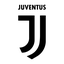

How many goals has Cristiano Ronaldo scored?
Cristiano Ronaldo has scored 977 career goals in 1,331 senior appearances for club and country as of 24 August 2026, a rate of 0.73 goals per game. See the full breakdown of his goals by year.
Career statistics Updated 24 August 2026
Cristiano Ronaldo has scored 977 goals in 1,331 senior appearances for club and country as of 24 August 2026, with 291 assists. He is 23 goals short of 1,000 and still playing, at 41, for Al Nassr and Portugal. Every figure below is compiled by hand, match by match.
Cristiano Ronaldo 7
Latest Ronaldo reached 977 career goals at the 2026 World Cup, where he became the first man to score at six different World Cup tournaments. He has 20 goals in the 2026 calendar year and 1 for Al Nassr in 2026/27. Last checked 24 August 2026.
Cristiano Ronaldo has scored 977 career goals in 1,331 senior appearances for club and country as of 24 August 2026, a rate of 0.73 goals per game. See the full breakdown of his goals by year.
Ronaldo scored 1 goals for Al Nassr in the 2026/27 season, 1 of them in the Saudi Pro League, and he has 20 goals in the 2026 calendar year. Every campaign is listed on the goals by season page.
Real Madrid, by a distance: 450 goals in 438 games between 2009 and 2018, a rate of 1.03 per game. See how those nine seasons broke down on the goals by season page.
Ronaldo has won the Ballon d'Or five times, in 2008, 2013, 2014, 2016 and 2017, alongside two The Best FIFA Men's Player awards and four European Golden Shoes. See every individual award.
Cristiano Ronaldo is 41 years old. He was born on 5 February 1985 in Funchal, Madeira, and is still playing for Al Nassr and Portugal. His career is told chapter by chapter on the through the years page.
His best club season was 2014/15 at Real Madrid, with 61 goals in 54 games in all competitions. His best calendar year was 2013, with 69 goals. Compare every season side by side.
| Team and years | Apps | Goals | Assists | Goals per game |
|---|---|---|---|---|
| Real Madrid2009 to 2018 | 438 | 450 | 131 | 1.03 |
| Portugal2003 to present | 233 | 146 | 45 | 0.63 |
| Manchester United2003 to 2009, 2021 to 2022 | 346 | 145 | 64 | 0.42 |
| Al Nassr2023 to present | 149 | 130 | 23 | 0.87 |
 Juventus2018 to 2021 |
134 | 101 | 22 | 0.75 |
| Sporting CP2002 to 2003 | 31 | 5 | 6 | 0.16 |
| Career total2002 to present | 1,331 | 977 | 291 | 0.73 |
Senior first team matches only, in every competition. Youth and reserve football is excluded.
Ronaldo has scored in every calendar year since 2002 and reached 40 goals or more in fourteen separate years. His best was 69 goals in 2013.
Ronaldo has won 35 team trophies in four countries: 3 Premier Leagues, 2 La Liga titles, 2 Serie A titles and the 2025/26 Saudi Pro League, plus 5 Champions Leagues, Euro 2016 and two Nations League titles with Portugal. The club by club list, with every year, is on the achievements page.
| Team | Free kicks | Penalties | Hat tricks |
|---|---|---|---|
| Real Madrid | 33 | 81 | 44 |
| Manchester United | 15 | 21 | 3 |
| Portugal | 11 | 22 | 10 |
| Al Nassr | 6 | 32 | 6 |
| Juventus | 1 | 28 | 3 |
| Sporting CP | 0 | 0 | 0 |
| Career total | 66 | 184 | 66 |
Penalties are 18.8 percent of his 977 goals. The other 793 came from open play and free kicks.
Cristiano Ronaldo has 291 career assists in 1,331 appearances as of 24 August 2026, roughly one every 4.6 games. The total is counted here by hand, goal by goal, which is why it is higher than some published figures.
Ronaldo has scored 140 Champions League goals, more than any other player in the history of the competition. That is 105 for Real Madrid, 21 for Manchester United and 14 for Juventus.
Ronaldo has scored 146 goals in 233 senior caps for Portugal, the most international goals in the history of men's football, including 11 World Cup goals across six tournaments.
Ronaldo has scored 66 direct free kick goals: 33 for Real Madrid, 15 for Manchester United, 11 for Portugal, 6 for Al Nassr and 1 for Juventus.
Ronaldo has scored 184 penalties, which is 18.8 percent of his 977 career goals. Real Madrid account for 81 of them and Al Nassr for 32.
Ronaldo has scored 66 hat tricks, 44 of them for Real Madrid. He also has 10 for Portugal, 6 for Al Nassr, 3 for Manchester United and 3 for Juventus.
Ronaldo has played for Sporting CP, Manchester United in two spells, Real Madrid, Juventus and Al Nassr, alongside 233 caps for Portugal since 2003. Each move is covered on the through the years page.
They are an own compiled tally, counted match by match from full goal and match records and checked against club and competition sources. The method is set out in full at the bottom of this page.
Every figure on this site counts official senior first team matches for Sporting CP, Manchester United, Real Madrid, Juventus, Al Nassr and Portugal, in all league, domestic cup, continental and international competitions. Youth and reserve football is excluded, including Ronaldo's Sporting CP B and Portugal youth appearances.
Goals, assists, penalties, free kicks and hat tricks are an own compiled tally, counted by hand from full match records and then checked against club and competition sources. Assists in particular are counted goal by goal rather than taken from a data feed, which is why the total of 291 is higher than the figure carried by several football databases. Figures are updated after every match Ronaldo features in. Last updated 24 August 2026.